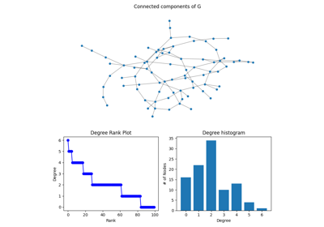
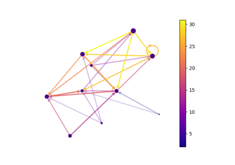
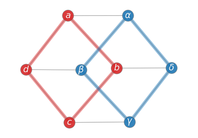
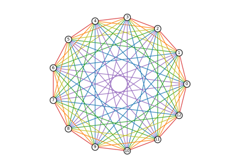

Drawing#


Cluster Layout

Degree Analysis

Directed Graph


Eigenvalues



Labels And Colors
Plotting MultiDiGraph Edges and Labels
Plotting MultiDiGraph Edges and Labels



Rainbow Coloring
Random Geometric Graph


Spectral Embedding


Weighted Graph